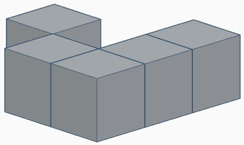
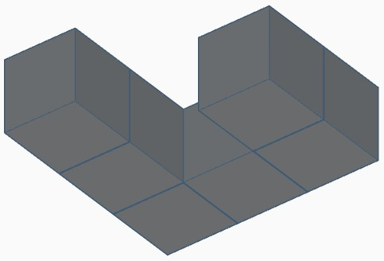
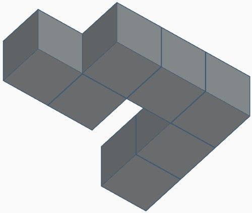

Zemāk Tu redzi figūru. Kad sāksi uzdevuma izpidli, parādīsies vēl 3 figuras un katrai no tām klāt būs cipars 1 - 3. Tev pēc iespējas ātrāk ir jānospiež tas cipars, kas atbilst attēlam ar doto figūru, bet pagrieztu citādāk.
Lai sāktu pildīt uzdevumu, nospied atstarpes taustiņu.
1
2
3
